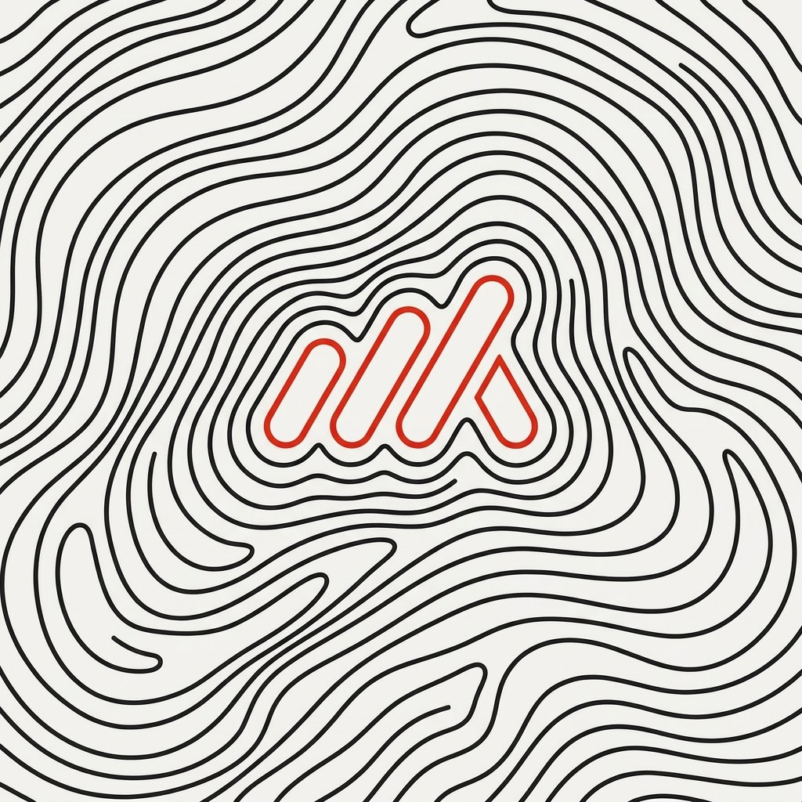
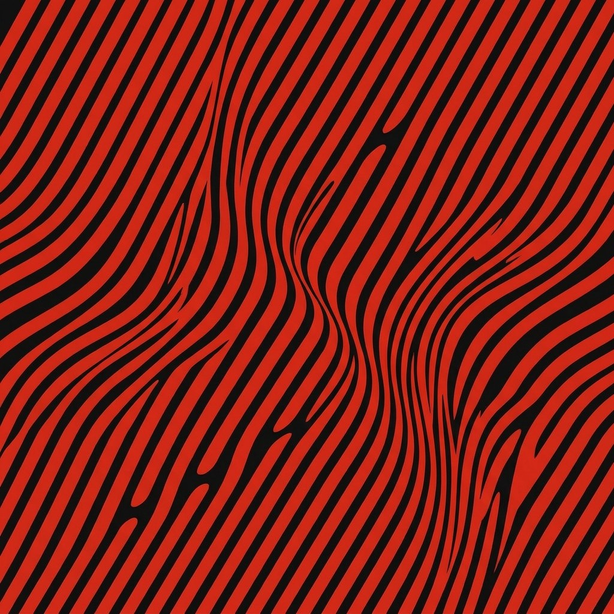
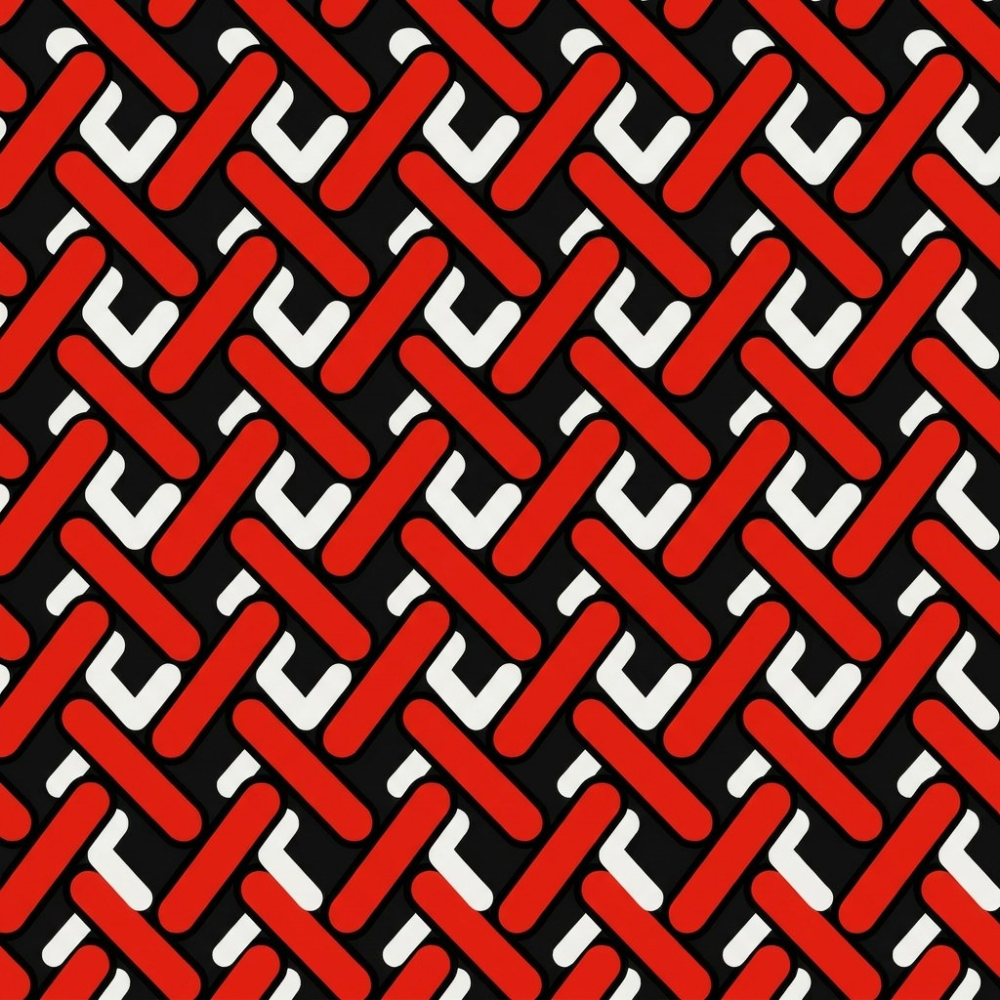
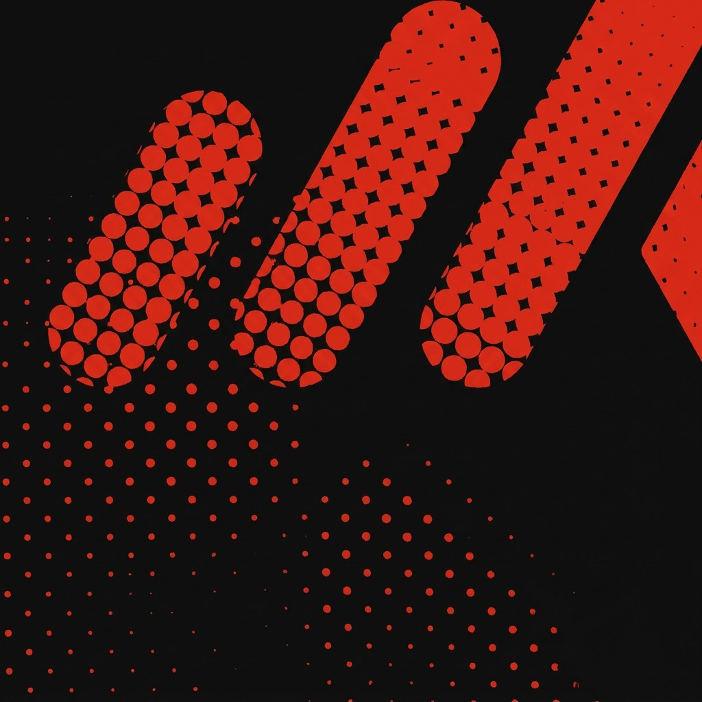
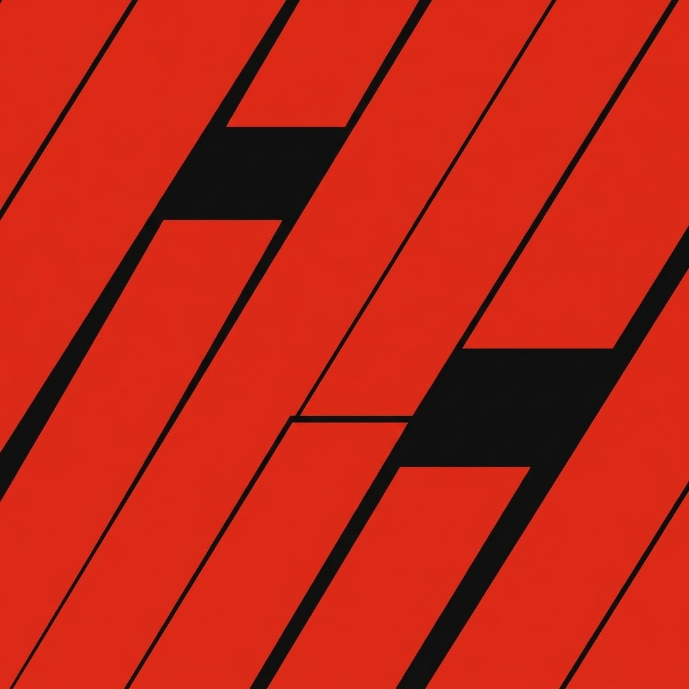
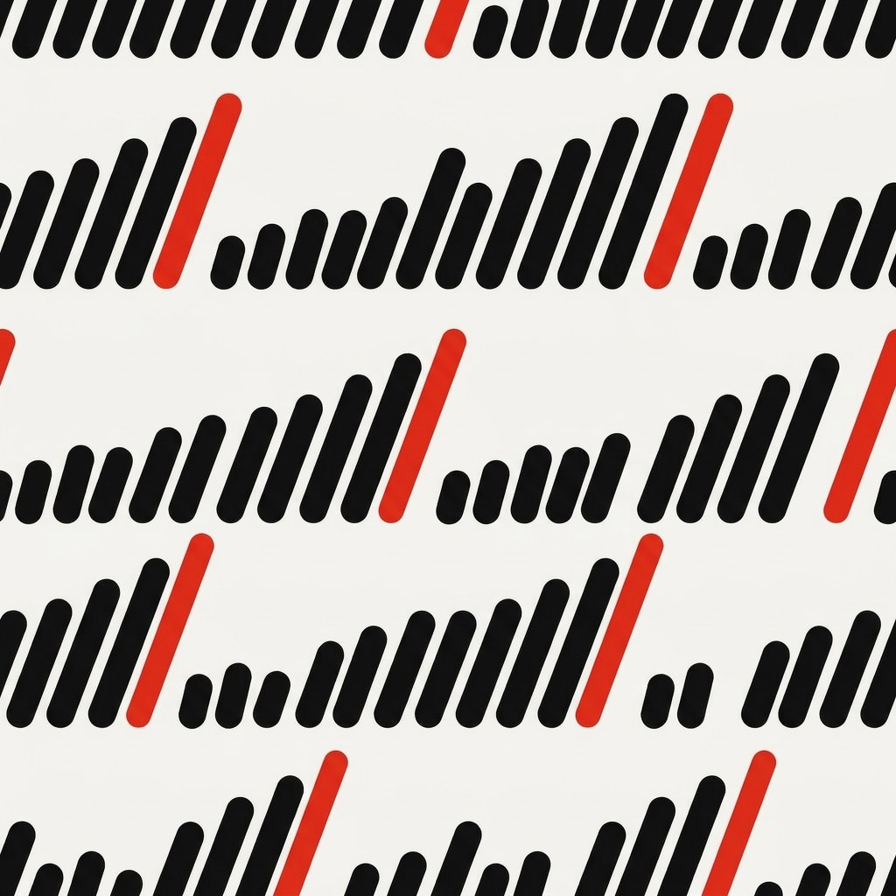
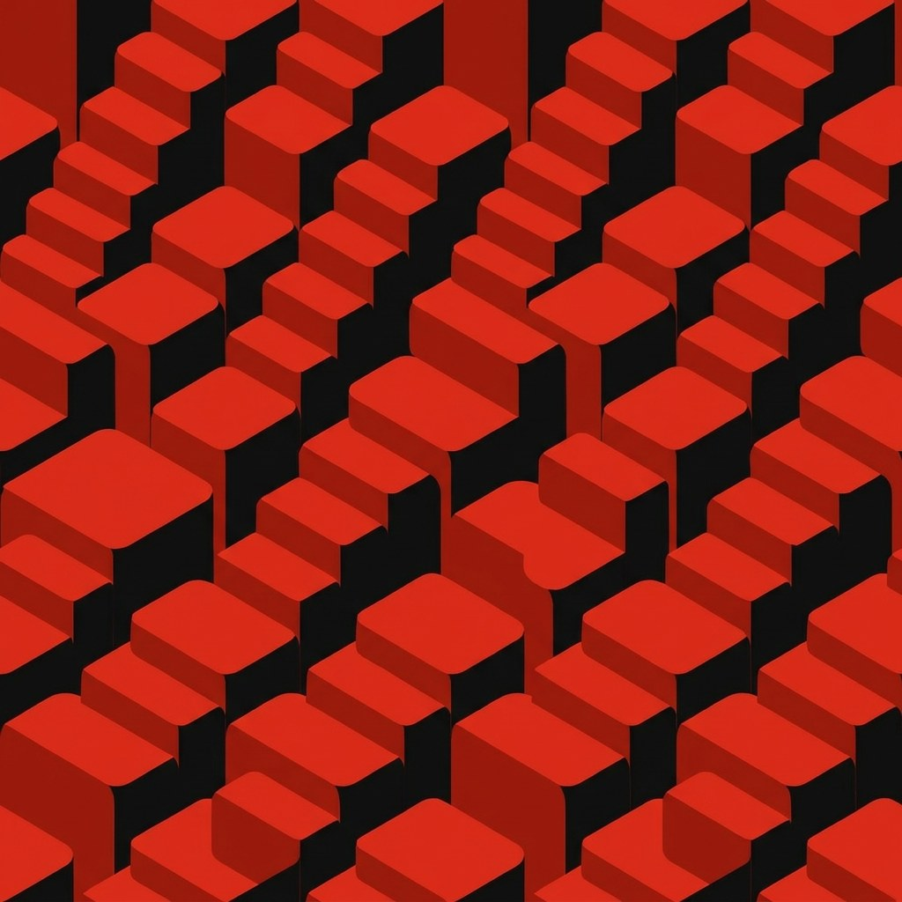
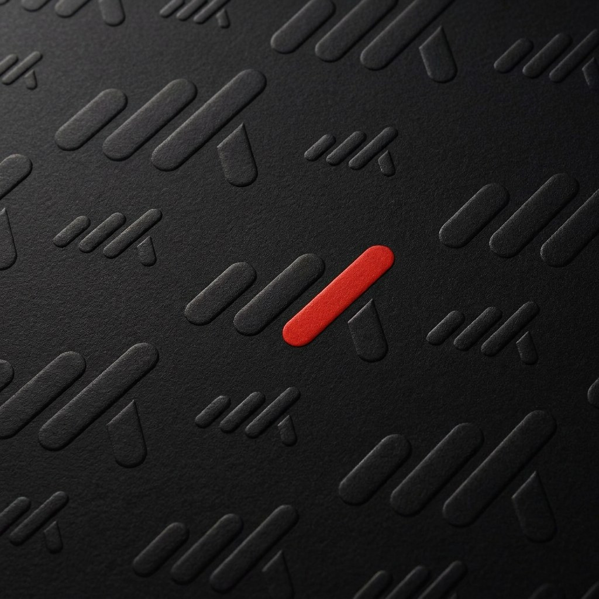
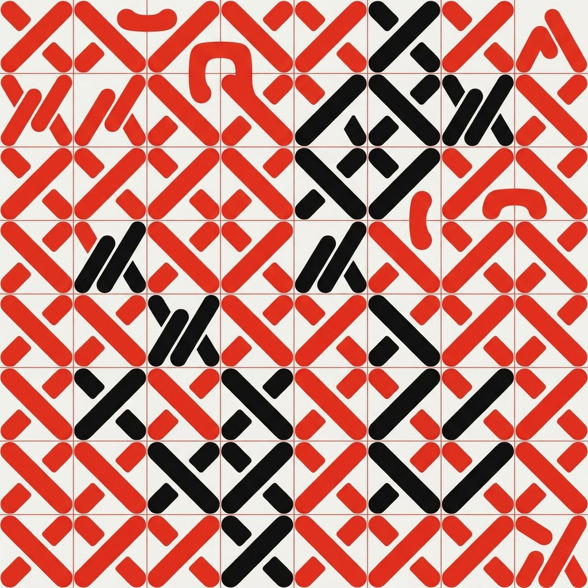
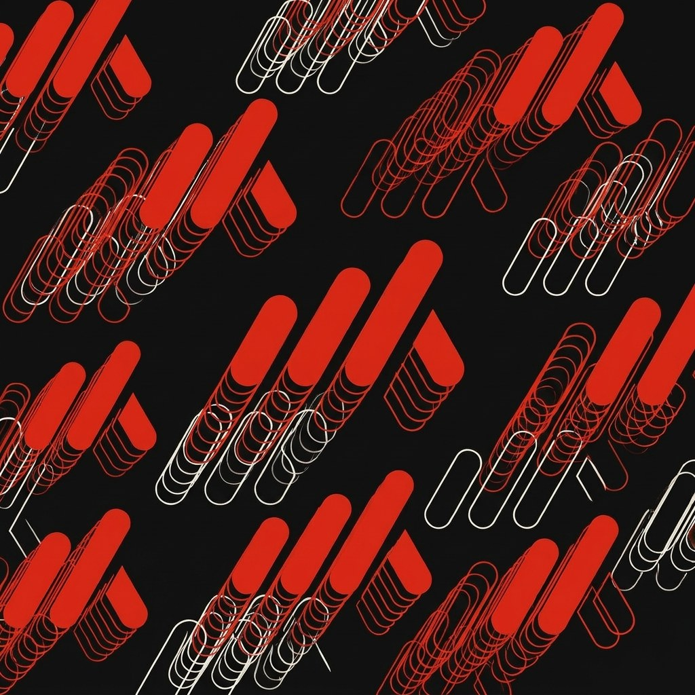

Each concept was drawn by Nano Banana Pro from the final logo image, one idea per image. These are direction finders, not final files: the one you pick gets redrawn as a clean vector in Carbon, Chalk and Signal.

The mark sits at the top of a contour map, and every line climbs toward it. It tells the whole story in one image: the business is the mountain, the mark is the summit. Works full-bleed on Chalk and in reverse on Carbon.

Op-art stripes at the mark's angle that bend and bunch where the lever pushes. It feels like force being applied, which is exactly what leverage is. Very bold, best for covers and large walls.

Bars and levers going over and under each other like a basket weave. It reads as a textile and a structure at once, and it tiles cleanly. The strongest candidate for an all-over repeat.

The mark built from halftone dots, cropped huge, fading out to the lower left. A print-shop feel that is rare in this category. A graphic device for posters and social, not an all-over repeat.

A solid red field cut into slabs along the bar and lever angles. Minimal and confident, close to the supergraphic. It could work as a cover system, but it says less about the mark.

Rows of slanted bars in a rhythm, like data or a musical score, with red accents. Cleaner than my Signal code, but still closer to a chart than a pattern.

Bold staircases, but the 3D blocks feel like a generic isometric illustration and lose the rounded bars.

Beautiful as a print finish reference (debossed business cards, folders), but it is a rendering, not a pattern we can use flat.

Too many pieces. Reads as cross-stitch or a tribal print.

Busy outline echoes. It looks like clip-art speed lines.